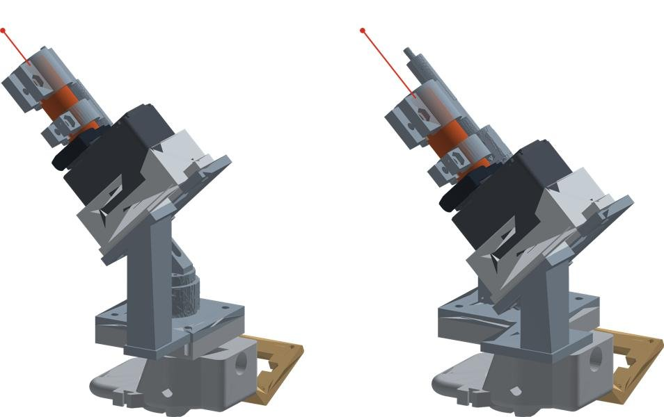

숙련 용접사의 손기술을,
7축 로봇이 레이저로 잇는다
합격자만 현장에 서는 기술이,
사람과 함께 사라지고 있다
작업자 기량을 따로 시험해 합격자만 투입하는 유일한 공종이고, 그만큼 손기술과 경험에 기대는 암묵지가 많다
3D 업종으로 여겨져 청년층 신규 유입이 크게 줄었다
공장의 자동용접은 야외 강교량 현장에서 멈춘다
실내 철골 제작공장
교시한 경로를 센서로 보정하며 정형 구조물을 용접한다
강교량 등 야외 건설현장
위치와 방향, 설치 오차, 용접부 형상, 기상이 매번 달라 여전히 수동용접에 의존한다
로봇이 스스로 용접 대상을 인지하고 판단하는 자율용접이 필요하다
로봇 용접은 다가가고, 녹이고, 확인하고, 남긴다
다가간다
T형 필렛 시편으로 접근
녹인다
아크로 용접선을 따라 용접
확인한다
레이저 점으로 용접선 위치 확인
남긴다
완성된 필렛 비드
대회에서는 아크 대신 레이저 점으로 이 경로를 그린다
포스코이앤씨 협동로봇은 세워 둔 이음부까지
토치 자세를 바꿔 가며 따라간다
장면
전시장 시연,
수직으로 세운 H형 강재 이음부
우리가 가져올 것
자세가 바뀌어도 이음부를 놓치지 않는 판단을, 시연 학습으로 만든다
그 과정을 오픈소스 기반 7축 로봇이
시연으로 배운다
| 기존 자동용접 | 이번 연구 | |
|---|---|---|
| 경로 | 교시로 미리 정한다 | 숙련자가 리더암으로 보여 준 동작을 ACT가 학습한다 |
| 시편 | 정해진 자리 | 위치와 각도를 바꾼 임의 배치 |
| 판단 | 사람이 시작과 끝을 지정 | 로봇이 레이저 ON, 추종, OFF를 스스로 정한다 |
SO-ARM102 오픈소스 SO-ARM 기반 자체 제작 7축 로봇
대회 이후 상용 용접전원과 공정 제어를 붙여 현장용으로 넓힌다
시편을 놓은 뒤부터는 사람이 손대지 않는다
시편 배치
사람이 필렛 시편을 임의 위치와 각도로 놓는다
시편 인식
카메라로 시편과 용접선을 찾는다
시작점 접근
토치를 용접선 시작점 위로
토치 거리
용접부와 20±3mm(안)
레이저 ON
그리퍼 서보가 버튼을 누른다
용접선 추종
레이저 점이 선을 따라간다
OFF, 복귀
끝점에서 끄고 홈 자세로
손잡이를 닫는 순간이, 레이저를 켜는 법으로 학습된다
리더암
숙련자가 직접 조작
손잡이 닫힘 = 레이저 ON
팔로워 SO-ARM102
1~6번 관절이 토치를 옮긴다
7번 그리퍼 서보 = 레이저 버튼
데이터셋
카메라 영상 2개와 모터 7개 값, 50개 이상
그리퍼 값 = 레이저 상태 (0, 100)
ACT 학습
영상과 관절 상태를 보고
다음 동작 묶음을 한 번에 예측
실행
리더암 없이 팔로워 모터 7개를
정책이 직접 움직인다
대안 (준비 완료)
서보가 안 되면 아두이노와
릴레이로 버튼 접점을 여닫는다
축소 OPTi3 토치에 손목 카메라와
레이저를 한 몸으로 붙였다
레이저 포인터 실측값, 클램프 링 3개로 고정
토치 축과 평행한 레이저의 간격, 추종 오차는 레이저 점 기준
기존 손목 카메라 마운트와 체결면을 원본 그대로
출력하고, 부딪히고, 고치면서 여기까지 왔다
서보가 버튼에 닿지 않았다
원래 자리 서보 축과 버튼 사이 99mm. 서보를 레이저 옆으로 옮기고 레버로 누름
1차 출력, 레이저가 안 들어갔다
버튼이 뒤쪽 링에 걸림 → 링에 버튼 홈. 공중에 뜬 받침은 늘어짐 → 별도 부품으로 분리
작업판에 부딪혔다
와이어 21mm → 5mm로 토치 16mm 단축. 노즐보다 17mm 튀어나와 있던 레이저를 15mm 뒤로
지금: 모터를 손목 쪽으로
모터가 머리에 있으면 어느 쪽이든 닿을 위험. 밀대와 꺾임 지렛대로 손목에서 누르는 구조로 바꾸는 중

설계는 끝났고, 실물 시험은 이번 주에 시작한다
끝남
Isaac Sim OPTi3 원격 조작10월, 저장소 PR 6건
엔드이펙터 설계와 CAD 검사
레이저 녹화 방식, 릴레이 대안 코드
진행 중
토치 부품 재출력16mm 단축, 레이저 15mm 후퇴
모터를 손목 쪽으로밀대와 꺾임 지렛대 설계
시작 전
SO-ARM102용 LeRobot 7축 설정
캘리브레이션, 시연 녹화
ACT 학습, 반복시험
확인 필요
레이저 버튼이 누르는 동안만 켜지는 방식인지
한 번 눌러 켜는 방식이면 릴레이 대안으로 바꾼다
30번 돌려 27번 이상, 처음부터 끝까지 해내야 한다
| 평가 항목 | 판정 기준(안) |
|---|---|
| 시편 인식 | 시편 위치와 방향을 찾음 |
| 시작점 접근 | 위치 오차 5mm 이하 |
| 토치 거리 유지 | 토치 끝과 용접부 20±3mm |
| 레이저 ON | 시작점에서 켜짐 |
| 용접선 추종 | 레이저 점 기준 이탈 5mm 이하 |
| 종료점 도달 | 위치 오차 5mm 이하 |
| 레이저 OFF | 종료점에서 꺼짐 |
| 홈 자세 복귀 | 홈 자세 도달, 전체 작업 시간 기록 |
판정 수치는 팀 협의용 제안 목표값